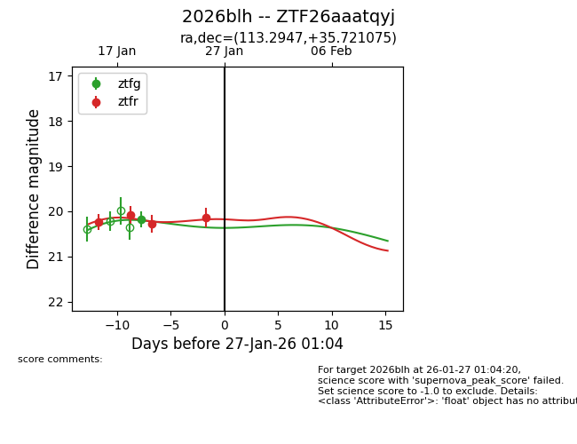
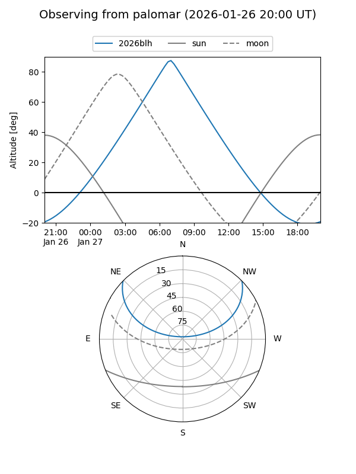

2026blh
Target 2026blh at 2026-01-27 01:06
Aliases and brokers:
FINK: link
Lasair: link
ALeRCE: link
TNS: link
YSE: link
alt names
ZTF26aaatqyj (ztf,fink_ztf)
2026blh (tns,yse)
Coordinates:
equatorial (ra, dec) = 113.2947,+35.72108
equatorial (HMS+DMS) = 07:33:10.73,+35:43:15.87
galactic (l, b) = (183.3872,+23.39658)
Flags:
Photometry:
last ztfg=20.18, ztfr=20.14
1 ztfg, 4 ztfr detections
Lightcurve

Visibility


Additional plots